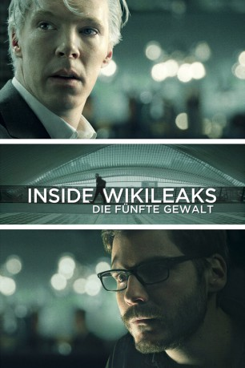
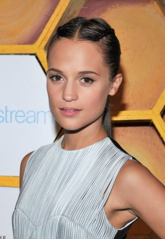
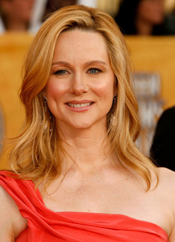
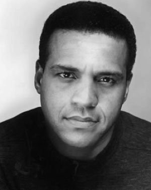
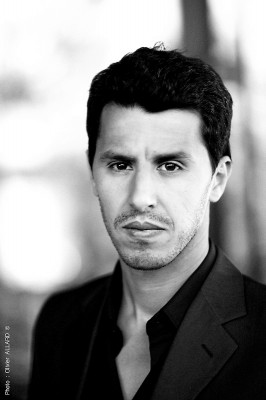
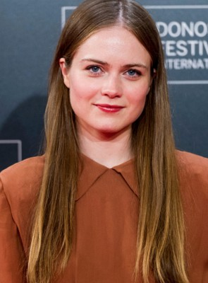
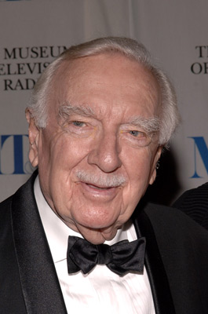

#4673 Inside WikiLeaks - Die fünfte Gewalt
Alternativ: The Fifth Estate
 
 IMDB-Wertung: 6.2 / 10
IMDB-Wertung: 6.2 / 10  Metascore: 0
Metascore: 0 
Daniel Domscheit-Berg ist Julian Assanges engster Vertrauter und Mitarbeiter. Gemeinsam entwickeln sie die Internet-Website WikiLeaks und verändern damit die weltweite Informationsverteilung. Die Macher von WikiLeaks sehen die Seite als Enthüllungsplattform für Menschen, die anonym geheime Informationen veröffentlichen wollen, um politische, gesellschaftliche und wirtschaftliche Korruption aufzudecken oder aber Verbrechen aufzuklären. Assange und Domscheit-Berg sind damit überaus erfolgreich und werden fast über Nacht zu weltbekannten Aktivisten. Als sie jedoch den größten Fund an geheimen Dokumenten der amerikanischen Geschichte machen, geraten die beiden in Streit über die Grundausrichtung ihrer Arbeit. Sie stehen verstärkt im Blickpunkt der Öffentlichkeit, aber auch im Dauer-Fokus von Regierungen und Geheimdiensten und so stellt sich bald die Frage, wie weit man bei der Veröffentlichung von geheimen Dokumenten gehen darf - und welchen Preis man dafür zu zahlen bereit ist.
Jahr: 2013
Dauer: 128 Minuten
FSK: 12
Land: USA Studio: Touchstone PicturesTonspuren: DTS - ,
Untertitel: Deutsch, Englisch,
Auflösung: 1080p (1920x800) Größe: 7096 MB
Genre: Biographie, Drama, Thriller
Regisseur: Bill Condon
Drehbuch: Mark Hosack
Soundtrack:
Darsteller:
 Peter Capaldi als Alan Rusbridger
Peter Capaldi als Alan Rusbridger David Thewlis als Nick Davies
David Thewlis als Nick Davies Anatole Taubman als Holger Stark
Anatole Taubman als Holger Stark Alexander Beyer als Marcel Rosenbach
Alexander Beyer als Marcel Rosenbach- Philip Bretherton als Bill Keller
 Dan Stevens als Ian Katz
Dan Stevens als Ian Katz Daniel Brühl als Daniel Berg
Daniel Brühl als Daniel Berg Benedict Cumberbatch als Julian Assange
Benedict Cumberbatch als Julian Assange Jamie Blackley als Ziggy
Jamie Blackley als Ziggy Ludger Pistor als Supervisor
Ludger Pistor als Supervisor-  Alicia Vikander als Anke Domscheit
 Marleen Lohse als Tacheles Waitress
Marleen Lohse als Tacheles Waitress Michael Culkin als Ralph Zilke
Michael Culkin als Ralph Zilke Moritz Bleibtreu als Marcus
Moritz Bleibtreu als Marcus Carice van Houten als Birgitta Jónsdóttir
Carice van Houten als Birgitta Jónsdóttir- Jeany Spark als Wired Reporter
-  Laura Linney als Sarah Shaw
 Anthony Mackie als Sam Coulson
Anthony Mackie als Sam Coulson John Schwab als White House Staffer
John Schwab als White House Staffer Stanley Tucci als James Boswell
Stanley Tucci als James Boswell Edgar Selge als Daniel's Father
Edgar Selge als Daniel's Father Alexander Siddig als Dr. Tarek Haliseh
Alexander Siddig als Dr. Tarek Haliseh Michael Jibson als Irritated Reporter
Michael Jibson als Irritated Reporter- Lydia Leonard als Alex Lang
- Darren Evans als Private Manning
 Kyle Soller als Young Staffer
Kyle Soller als Young Staffer Nigel Whitmey als General Thomason
Nigel Whitmey als General Thomason- Sonya Cassidy als Alan's Secretary
-  Chris McKinney als Times Reporter
 Christian Contreras als Times War Correspondent
Christian Contreras als Times War Correspondent Camilla Rutherford als Guardian Lawyer
Camilla Rutherford als Guardian Lawyer- Amir Boutrous als Mutassim Al-Gaddafi
- Mimi Ferrer als Shida Haliseh
-  Mounir Margoum als Border Guard
- Gudmundur Thorvaldsson als WikiLeaks Staffer #1
-  Hera Hilmar als Wikileaks Staffer #2
 George W. Bush als Himself , archive footage, uncredited
George W. Bush als Himself , archive footage, uncredited- Hillary Clinton als Herself , archive footage, uncredited
-  Walter Cronkite als Himself , archive footage, uncredited
- Pascaline Crêvecoeur als Bar's woman , uncredited
- Yuval David als Broadcast Journalist , uncredited
 Truus de Boer als Diplomatic Staff of the US State Department , uncredited
Truus de Boer als Diplomatic Staff of the US State Department , uncredited- Eric Kabongo als Train passenger , uncredited
- CinSyla Key als The Airplane Passenger , uncredited
 Barack Obama als Himself , archive footage, uncredited
Barack Obama als Himself , archive footage, uncredited- Michelle Obama als Herself , archive footage, uncredited
 Franklin D. Roosevelt als Himself , archive footage, uncredited
Franklin D. Roosevelt als Himself , archive footage, uncredited- Georges Terryn als Extra , uncredited
 Alexander von Roon als Reporter , uncredited
Alexander von Roon als Reporter , uncredited- Brian Williams als Himself , archive footage, uncredited
Datei: X:\2013(I-M)\Inside WikiLeaks - Die fünfte Gewalt (2013, FSK12, 1920x800).mkv seit 02.11.2016
Festplatte: HD 2013(I-Z)-2014(A-Z)
 Es gibt insgesamt 89 Filme in der Gruppe '2013(I-M)'
Es gibt insgesamt 89 Filme in der Gruppe '2013(I-M)'